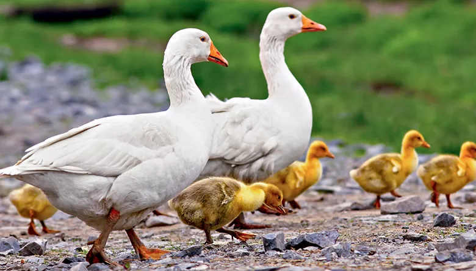

Por: Luiza V.S

Oi! Se você veio parar aqui, é porque gosta de gansos. Veja algumas curiosidades bem legais sobre eles:
Os gansos são demais! Como eu sou só uma estudante fã deles, se quiser saber mais coisas científicas, vale a pena pesquisar no Google ou falar com um biólogo.